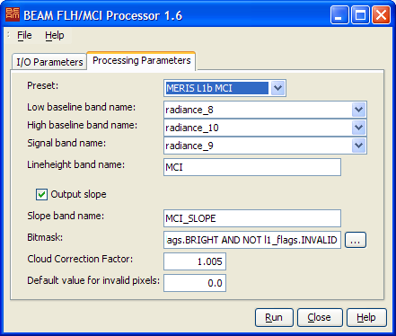

| Processor Description - FLH/MCI |
|
The FLH/MCI processor can be invoked from the VISAT tool menu by selecting
the FLH/MCI Processor command. On the command line the FLH/MCI processor is
available by means of the Graph Processing Tool gpt which is located in the BEAM bin
directory. Typing gpt FlhMci -h displays further information.
Selecting the FLH/MCI Processor command from the VISAT tool menu pops up the following dialog:

Source product: Here the user specifies the source product. The combo box presents a list of all products open in VISAT. The user may select one of these or, by clicking on the button next to the combo box, choose a product from the file system.
Name: Used to specify the name of the target product.
Save as: Used to specify whether the target product should be saved to the file system. The combo box presents a list of available file formats. The text field or the button next to it allow to specify a target directory.
Open in VISAT: Used to specify whether the target product should be opened in VISAT. When the the target product is not saved, it is opened in VISAT automatically.

Preset: Select one of the available presets from the predefined list. Available presets are:
A preset selects the bands used to calculate the baseline, the signal band, the line height band and the slope band.
Lower baseline band name: The name for the lower wavelength band defining the baseline. Enter a band name or select one of the list of available bands (only available when an input product is already selected).
Upper baseline band name: The name of the upper wavelength band defining the baseline. Enter a band name or select one of the list of available bands (only available when an input product is already selected).
Signal band name: The name of the signal band, i.e. the band for which the baseline height is calculated. Enter a band name or select one of the list of available bands (only available when an input product is already selected).
Line height band name: The name of the line height band in the target product.
Generate slope parameter: Activates or deactivates calculating the slope parameter.
Slope band name: The name of the slope band in the target product (disabled when calculating the slope is deactivated)
Mask expression: A ROI-mask expression to be evaluated during processing. Used to define pixels of interest.
Cloud correction factor: The cloud correction factor used during calculation. See algorithm documentation for details.
Invalid FLH/MCI value: The value written to a target pixel when it is excluded from the ROI or the FLH/MCI calculation yields an invalid result.
Run Creates the target product. The FLH/MCI processing is actually deferred until its band data are accessed, either by writing the product to a file or by viewing its band data. When the Save as option is checked, the FLH/MCI processing is triggered automatically.
Close Closes the dialog.
File The entries found in this menu allow to save the current processing parameters to disk and to open a saved parameter set from disk.
Help Displays this help page.